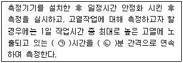
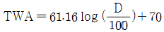
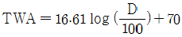
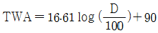
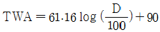
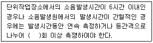
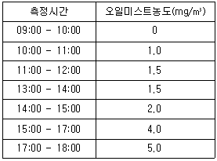
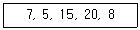
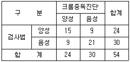

산업위생관리기사 (2019-08-04 기출문제)
1과목: 산업위생학개론
1. 다음 중 재해예방의 4원칙에 관한 설명으로 옳지 않은 것은?
- 재해발생과 손실의 관계는 우연적이므로 사고의 예방이 가장 중요하다.
- 재해발생에는 반드시 원인이 있으며, 사고와 원인의 관계는 필연적이다.
- 재해는 예방이 불가능하므로 지속적인 교육이 필요하다.
- 재해예방을 위한 가능한 안전대책은 반드시 존재한다.
(정답률: 88%)

2. 다음 중 실내환경 공기를 오염시키는 요소로 볼 수 없는 것은?
- 라돈
- 포름알데히드
- 연소가스
- 체온
(정답률: 89%)
3. 300명의 근로자가 1주일에 40시간, 연간 50주를 근무하는 사업장에서 1년 동안 50건의 재해로 60명의 재해자가 발생하였다. 이 사업장의 도수율은 약 얼마인가? (단, 근로자들은 질병, 기타 사유로 인하여 총 근로시간의 5%를 결근하였다.)
- 93.33
- 87.72
- 83.33
- 77.72
(정답률: 70%)
4. 다음 근육운동에 동원되는 주요 에너지 생산방법 중 혐기성 대사에 사용되는 에너지원이 아닌 것은?
- 아데노신 삼인산
- 크레아틴 인산
- 지방
- 글리코겐
(정답률: 83%)
5. 다음 중 피로에 관한 설명으로 틀린 것은?
- 일반적인 피로감은 근육 내 글리코겐의 고갈, 혈중 글루코오스의 증가, 혈중 젖산의 감소와 일치하고 있다.
- 충분한 영양섭취와 휴식은 피로의 예방에 유효한 방법이다.
- 피로의 주관적 측정방법으로는 CMI(Cornel Medical Index)를 이용한다.
- 피로는 질병이 아니고 원래 가역적인 생체반응이며 건강장해에 대한 경고적 반응이다.
(정답률: 76%)
6. 다음 중 산업안전보건법령상 물질안전보건자료(MSDS)의 작성 원칙에 관한 설명으로 가장 거리가 먼 것은?
- MSDS의 작성단위는 「계량에 관한 법률」이 정하는 바에 의한다.
- MSDS는 한글로 작성하는 것을 원칙으로 하되 화학물질명, 외국기관명 등의 고유명사는 영어로 표기할 수 있다.
- 각 작성항목은 빠짐없이 작성하여야 하며, 부득이 어느 항목에 대해 관련 정보를 얻을 수 없는 경우, 작성란은 공란으로 둔다.
- 외국어로 되어 있는 MSDS를 번역하는 경우에는 자료의 신뢰성이 확보될 수 있도록 최초 작성기관명 및 시기를 함께 기재하여야 한다.
(정답률: 85%)
7. 산업안전보건법령상 사무실 공기관리에 대한 설명으로 옳지 않은 것은?
- 관리기준은 8시간 시간가중평균농도 기준이다.
- 이산화탄소와 일산화탄소는 비분산적외선검출기의 연속 측정에 의한 직독식 분석방법에 의한다.
- 이산화탄소의 측정결과 평가는 각 지점에서 측정한 측정치 중 평균값을 기준으로 비교·평가한다.
- 공기의 측정시료는 사무실 안에서 공기질이 가장 나쁠 것으로 예상되는 2곳 이상에서 채취하고, 측정은 사무실 바닥면으로부터 0.9 ~ 1.5m 의 높이에서 한다.
(정답률: 66%)
8. 영국에서 최초로 직업성 암을 보고하여, 1788년에 굴뚝 청소부법이 통과되도록 노력한 사람은?
- Ramazzini
- Paracelsus
- Percivall Pott
- Robert Owen
(정답률: 87%)
9. 미국산업안전보건연구원(NIOSH)의 중량물 취급 작업 기준 중, 들어 올리는 물체의 폭에 대한 기준은 얼마인가?
- 55 cm 이하
- 65 cm 이하
- 75 cm 이하
- 85 cm 이하
(정답률: 66%)
10. 다음 중 작업종류별 바람직한 작업시간과 휴식시간을 배분한 것으로 옳지 않은 것은?
- 사무작업 : 오전 4시간 중에 2회, 오후 1시에서 4시 사이에 1회, 평균 10~20분 휴식
- 정신집중작업 : 가장 효과적인 것은 60분 작업에 5분간 휴식
- 신경운동성의 경속도 작업 : 40분간 작업과 20분간 휴식
- 중근작업 : 1회 계속작업을 1시간 정도로 하고, 20~30분씩 오전에 3회, 오후에 2회 정도 휴식
(정답률: 75%)
11. “근로자 또는 일반대중에게 질병, 건강장해, 불편함, 심한 불쾌감 및 능률 저하 등을 초래하는 작업요인과 스트레스를 예측, 측정, 평가하고 관리하는 과학과 기술”이라고 산업위생을 정의하는 기관은?
- 미국산업위생학회(AIHA)
- 국제노동기구(ILO)
- 세계보건기구(WHO)
- 산업안전보건청(OSHA)
(정답률: 77%)
12. 다음 중 노동의 적응과 장애에 관련된 내용으로 적절하지 않은 것은?
- 인체는 환경에서 오는 여러 자극(stress)에 대하여 적응하려는 반응을 일으킨다.
- 인체에 적응이 일어나는 과정은 뇌하수체와 부신피질을 중심으로 한 특유의 반응이 일어나는데 이를 부적응증상군이라고 한다.
- 직업에 따라 신체 형태와 기능에 국소적 변화가 일어나는데 이것을 직업성변이(occupational stigmata)라고 한다.
- 외부의 환경변화나 신체활동이 반복되면 조절기능이 원활해지며, 이에 숙련 습득된 상태를 순화라고 한다.
(정답률: 69%)
13. 산업안전보건법령에 따라 단위작업장소에서 동일 작업근로자가 13명을 대상으로 시료를 채취할 때의 최초 시료채취 근로자수는 몇 명인가?
- 1명
- 2명
- 3명
- 4명
(정답률: 78%)
14. 미국산업위생학술원(AAIH)이 채택한 윤리강령 중 산업위생전문가가 지켜야 할 책임과 거리가 먼 것은?
- 기업체의 기밀은 누설하지 않는다.
- 과학적 방법의 적용과 자료의 해석에서 객관성을 유지한다.
- 근로자, 사화 및 전문 직종의 이익을 위해 과학적 지식을 공개하고 발표한다.
- 전문적 판단이 타협에 의하여 좌우될 수 있는 상황에 개입하여 객관적 자료로 판단한다.
(정답률: 82%)
15. 다음 중 직업병 예방을 위하여 설비 개선 등의 조치로는 어려운 경우 가장 마지막으로 적용하는 방법은?
- 격리 및 밀폐
- 개인보호구의 지급
- 환기시설 등의 설치
- 공정 또는 물질의 변경, 대치
(정답률: 79%)
16. 다음 중 ACGIH에서 권고하는 TLV-TWA(시간 가중 평균치)에 대한 근로자 노출의 상한치와 노출가능시간의 연결로 옳은 것은?
- TLV-TWA의 3배 : 30분 이하
- TLV-TWA의 3배 : 60분 이하
- TLV-TWA의 5배 : 5분 이하
- TLV-TWA의 5배 : 15분 이하
(정답률: 69%)
17. 정상 작업영역에 대한 정의로 옳은 것은?
- 위팔은 몸통 옆에 자연스럽게 내린 자세에서 아래팔의 움직임에 의해 편안하게 도달 가능한 작업영역
- 어깨로부터 팔을 뻗어 도달 가능한 작업영역
- 어깨로부터 팔을 머리 위로 뻗어 도달 가능한 작업영역
- 위팔은 몸통 옆에 자연스럽게 내린 자세에서 손에 쥔 수공구의 끝부분이 도달 가능한 작업영역
(정답률: 75%)
18. 산업안전보건법령상의 “충격소음작업”은 몇 dB 이상의 소음이 1일 100회 이상 발생되는 작업을 말하는가?
- 110
- 120
- 130
- 140
(정답률: 62%)
19. 다음 중 전신피로에 관한 설명으로 틀린 것은?
- 작업에 의한 근육 내 글리코겐 농도의 변화는 작업자의 훈련유무에 따라 차이를 보인다.
- 작업강도가 증가하면 근육 내 글리코겐량이 비례적으로 증가되어 근육피로가 발생된다.
- 작업강도가 높을수록 혈중 포도당 농도는 급속히 저하하며, 이에 따라 피로감이 빨리 온다.
- 작업대사량의 증가에 따라 산소소비량도 비례하여 증가하나, 작업대사량이 일정한계를 넘으면 산소소비량은 증가하지 않는다.
(정답률: 65%)
20. 크롬에 노출되지 않은 집단의 질병발생율은 1.0 이었고, 노출된 집단의 질병발생율은 1.2 였을 때, 다음 설명으로 옳지 않은 것은?
- 크롬의 노출에 대한 귀속위험도는 0.2 이다.
- 크롬의 노출에 대한 비교위험도는 1.2 이다.
- 크롬에 노출된 집단의 위험도가 더 큰 것으로 나타났다.
- 비교위험도는 크롬의 노출이 기여하는 절대적인 위험률의 정도를 의미한다.
(정답률: 59%)
2과목: 작업위생측정 및 평가
21. 자연습구온도는 31℃, 흑구온도는 24℃, 건구온도는 34℃인 실내작업장에서 시간당 400칼로리가 소모된다면 계속작업을 실시하는 주조공장의 WBGT는 몇 ℃ 인가? (단, 고용노동부 고시를 기준으로 한다.)
- 28.9
- 29.9
- 30.9
- 31.9
(정답률: 70%)
22. 작업환경측정의 단위표시로 틀린 것은? (단, 고용노동부 고시를 기준으로 한다.)(오류 신고가 접수된 문제입니다. 반드시 정답과 해설을 확인하시기 바랍니다.)
- 미스트, 흄의 농도는 ppm, mg/mm3로 표시한다.
- 소음수준의 측정단위는 dB(A)로 표시한다.
- 석면의 농도표시는 섬유개수(개/cm3)로 표시한다.
- 고열(복사열 포함)의 측정단위는 섭씨온도(℃)로 표시한다.
(정답률: 69%)
23. 공기시료채취 시 공기유량과 용량을 보정하는 표준기구 중 1차 표준기구는?
- 흑연 피스톤 미터
- 로타 미터
- 습식테스트 미터
- 건식가스 미터
(정답률: 68%)
24. 고열 측정방법에 관한 내용이다. ( ) 안에 들어갈 내용으로 맞는 것은? (단, 고용노동부 고시를 기준으로 한다.)

- ㉠ : 1, ㉡ : 5
- ㉠ : 2, ㉡ : 5
- ㉠ : 1, ㉡ : 10
- ㉠ : 2, ㉡ : 10
(정답률: 68%)
25. 흉곽성 입자상물질(TPM)의 평균입경(μm)은? (단, ACGIH 기준)
- 1
- 4
- 10
- 50
(정답률: 75%)
26. 일반적으로 소음계는 A, B, C 세가지 특성에서 측정할 수 있도록 보정되어 있다. 그 중 A특성치는 몇 phon의 등감곡선에 기준한 것인가?
- 20 phon
- 40 phon
- 70 phon
- 100 phon
(정답률: 78%)
27. 입자상 물질인 흄(fume)에 관한 설명으로 옳지 않은 것은?
- 용접공정에서 흄이 발생한다.
- 일반적으로 흄은 모양이 불규칙하다.
- 흄의 입자크기는 먼지보다 매우 커 폐포에 쉽게 도달하지 않는다.
- 흄은 상온에서 고체상태의 물질이 고온으로 액체화된 다음 증기화되고, 증기물의 응축 및 산화로 생기는 고체상의 미립자이다.
(정답률: 84%)
28. 다음의 유기용제 중 실리카겔에 대한 친화력이 가장 강한 것은?
- 알코올류
- 케톤류
- 올레핀류
- 에스테르류
(정답률: 71%)
29. 다음 중 0.2~0.5 m/sec 이하의 실내기류를 측정하는데 사용할 수 있는 온도계는?
- 금속온도계
- 건구온도계
- 카타온도계
- 습구온도계
(정답률: 79%)
30. 누적소음노출량(D, %)을 적용하여 시간가중평균소음기준(TWA, dB(A))을 산출하는 식은? (단, 고용노동부 고시를 기준으로 한다.)




(정답률: 77%)
31. 다음 소음의 측정시간에 관련한 내용에서 ( )에 들어갈 수치로 알맞은 것은? (단, 고용노동부 고시를 기준으로 한다.)

- 2
- 4
- 6
- 8
(정답률: 75%)
32. 작업환경공기 중 A물질(TLV 10 ppm) 5 ppm, B물질(TLV 100 ppm)이 50 ppm, C물질(TLV 100 ppm)이 60 ppm 있을 때, 혼합물의 허용농도는 약 몇 ppm 인가? (단, 상가작용 기준)
- 78
- 72
- 68
- 64
(정답률: 59%)
33. 입자상물질을 채취하는데 이용되는 PVC 여과지에 대한 설명으로 틀린 것은?
- 유리규산을 채취하여 X-선 회절분석법에 적합하다.
- 수분에 대한 영향이 크지 않다.
- 공해성 먼지, 총 먼지 등의 중량분석에 용이하다.
- 산에 쉽게 용해되어 금속 채취에 적당하다.
(정답률: 64%)
34. 절삭작업을 하는 작업장의 오일미스트 농도 측정결과가 아래표와 같다면 오일미스트의 TWA는 얼마인가?(오류 신고가 접수된 문제입니다. 반드시 정답과 해설을 확인하시기 바랍니다.)

- 3.24 mg/m3
- 2.38 mg/m3
- 2.16 mg/m3
- 1.78 mg/m3
(정답률: 56%)
35. 작업장에서 오염물질 농도를 측정했을 때 일산화탄소(CO)가 0.01% 이었다면 이 때 일산화탄소 농도(mg/m3)는 약 얼마인가? (단, 25℃, 1기압 기준이다.)
- 95
- 1⑤
- 115
- 125
(정답률: 55%)
36. 다음 중 석면을 포집하는데 적합한 여과지는?
- 은막 여과지
- 섬유상 막여과지
- PTEE 막여과지
- MCE 막여과지
(정답률: 55%)
37. 작업 환경 측정 결과 측정치가 다음과 같을 때, 평균편차가 얼마인가?

- 2.8
- 5.2
- 11
- 17
(정답률: 44%)
38. 초기 무게가 1.260g 인 깨끗한 PVC 여과지를 하이볼륨(High-volume) 시료 채취기에 장착하여 작업장에서 오전 9시부터 오후 5시까지 2.5L/분의 유량으로 시료 채취기를 작동시킨 후 여과지의 무게를 측정한 결과가 1.280g 이었다면 채취한 입자상 물질의 작업장 내 평균농도(mg/m3)는?
- 7.8
- 13.4
- 16.7
- 19.2
(정답률: 57%)
39. 다음 중 표본에서 얻은 표준편차와 표본의 수만 가지고 얻을 수 있는 것은?
- 산술평균치
- 분산
- 변이계수
- 표준오차
(정답률: 47%)
40. 누적소음노출량 측정기로 소음을 측정하는 경우, 기기 설정으로 적절한 것은? (단, 고용노동부 고시를 기준으로 한다.)
- Criteria = 80 dB, Exchange Rate = 5 dB, Threshold = 90 dB
- Criteria = 80 dB, Exchange Rate = 10 dB, Threshold = 90 dB
- Criteria = 90 dB, Exchange Rate = 10 dB, Threshold = 80 dB
- Criteria = 90 dB, Exchange Rate = 5 dB, Threshold = 80 dB
(정답률: 75%)
3과목: 작업환경관리대책
41. 후드의 정압이 50 mmH2O 이고 덕트 속도압이 20 mmH2O 일 때, 후드의 압력손실계수는?
- 1.5
- 2.0
- 2.5
- 3.0
(정답률: 41%)
42. 내경 15mm 인 관에 40 m/min 의 속도로 비압축성 유체가 흐르고 있다. 같은 조건에서 내경만 10 mm로 변화하였다면, 유속은 약 몇 m/min 인가? (단, 관 내 유체의 유량은 같다.)
- 90
- 120
- 160
- 210
(정답률: 43%)
43. 0℃, 1기압에서 A기체의 밀도가 1.415 kg/m3 일 때, 100℃, 1기압에서 A기체의 밀도는 몇 kg/m3 인가?
- 0.903
- 1.036
- 1.085
- 1.411
(정답률: 60%)
44. 다음 중 덕트 내 공기의 압력을 측정할 때 사용하는 장비로 가장 적절한 것은?
- 피토관
- 타코메타
- 열선유속계
- 회전날개형 유속계
(정답률: 72%)
45. 다음 중 귀마개의 특징과 가장 거리가 먼 것은?
- 제대로 착용하는데 시간이 걸린다.
- 보안경 사용 시 차음효과가 감소한다.
- 착용여부 파악이 곤란하다.
- 귀마개 오염에 따른 감염 가능성이 있다.
(정답률: 78%)
46. 다음 중 국소배기장치에서 공기공급시스템이 필요한 이유와 가장 거리가 먼 것은?
- 에너지 절감
- 안전사고 예방
- 작업장의 교차기류 촉진
- 국소배기장치의 효율 유지
(정답률: 70%)
47. 오후 6시 20분에 측정한 사무실 내 이산화탄소의 농도는 1200 ppm, 사무실이 빈상태로 1시간이 경과한 오후 7시 20분에 측정한 이산화탄소의 농도는 400 ppm 이었다. 이 사무실의 시간당 공기교환 횟수는? (단, 외부공기 중의 이산화탄소의 농도는 330 ppm 이다.)
- 0.56
- 1.22
- 2.52
- 4.26
(정답률: 52%)
48. 안지름이 200mm인 관을 통하여 공기를 55 m3/min 의 유량으로 송풍할 때, 관 내 평균유속은 약 몇 m/sec 인가?
- 21.8
- 24.5
- 29.2
- 32.2
(정답률: 54%)
49. 슬롯 길이가 3m 이고, 제어속도가 2 m/sec 인 슬롯 후드에서 오염원이 2m 떨어져 있을 경우 필요 환기량은 몇 m3/min 인가? (단, 공간에 설치하며 플랜지는 부착되어 있지 않다.)
- 1434
- 2664
- 3734
- 4864
(정답률: 44%)
50. 방진마스크에 대한 설명으로 옳은 것은?
- 흡기 저항 상승률이 높은 것이 좋다.
- 형태에 따라 전면형 마스크와 후면형 마스크가 있다.
- 필터의 여과효율이 낮고 흡입저항이 클수록 좋다.
- 비휘발성 입자에 대한 보호가 가능하고 가스 및 증기의 보호는 안 된다.
(정답률: 64%)
51. 한랭작업장에서 일하고 있는 근로자의 관리에 대한 내용으로 옳지 않은 것은?
- 가장 따뜻한 시간대에 작업을 실시한다.
- 노출된 피부나 전신의 온도가 떨어지지 않도록 온도를 높이고 기류의 속도는 낮추어야 한다.
- 신발은 발을 압박하지 않고 습기가 있는 것을 신는다.
- 외부 액체가 스며들지 않도록 방수 처리된 의복을 입는다.
(정답률: 81%)
52. 스토크스 식에 근거한 중력침강속도에 대한 설명으로 틀린 것은? (단, 공기 중의 입자를 고려한다.)
- 중력가속도에 비례한다.
- 입자직경의 제곱에 비례한다.
- 공기의 점성계수에 반비례한다.
- 입자와 공기의 밀도차에 반비례한다.
(정답률: 66%)
53. 다음 중 국소배기장치 설계의 순서로 가장 적절한 것은?
- 소요풍량 계산 → 후드형식 선정 → 제어속도 결정
- 제어속도 결정 → 소요풍량 계산 → 후드형식 선정
- 후드형식 선정 → 제어속도 결정 → 소요풍량 계산
- 후드형식 선정 → 소요풍량 계산 → 제어속도 결정
(정답률: 54%)
54. 다음 중 방독마스크의 카트리지의 수명에 영향을 미치는 요소와 가장 거리가 먼 것은?
- 흡착제의 질과 양
- 상대습도
- 온도
- 분진 입자의 크기
(정답률: 42%)
55. 원심력 송풍기인 방사 날개형 송풍기에 관한 설명으로 틀린 것은?
- 깃이 평판으로 되어 있다.
- 플레이트형 송풍기라고도 한다.
- 깃의 구조가 분진을 자체 정화할 수 있도록 되어 있다.
- 큰 압력손실에서 송풍량이 급격히 떨어지는 단점이 있다.
(정답률: 59%)
56. 작업환경개선을 위한 물질의 대체로 적절하지 않은 것은?
- 주물공정에서 실리카모래 대신 그린모래로 주형을 채우도록 한다.
- 보온재로 석면 대신 유리섬유나 암면 등 사용한다.
- 금속표면을 블라스팅할 때 사용재료를 철구슬 대신 모래를 사용한다.
- 야광시계 자판의 라듐을 인으로 대체하여 사용한다.
(정답률: 67%)
57. 원심력 송풍기의 종류 중 전향 날개형 송풍기에 관한 설명으로 옳지 않은 것은?
- 다익형 송풍기라고도 한다.
- 큰 압력손실에도 송풍량의 변동이 적은 장점이 있다.
- 송풍기의 임펠러가 다람쥐 쳇바퀴 모양이며, 송풍기 깃이 회전방향과 동일한 방향으로 설계되어 있다.
- 동일 송풍량을 발생시키기 위한 임펠러 회전속도가 상대적으로 낮아 소음문제가 거의 발생하지 않는다.
(정답률: 55%)
58. 필요 환기량을 감소시키는 방법으로 옳지 않은 것은?
- 가급적이면 공정이 많이 포위되지 않도록 하여야 한다.
- 후드 개구며에서 기류가 균일하게 분포되도록 설계한다.
- 공정에서 발생 또는 배출되는 오염물질의 절대량을 감소시킨다.
- 포집형이나 레시버형 후드를 사용할 때는 가급적 후드를 배출 오염원에 가깝게 설치한다.
(정답률: 66%)
59. 국소배기시스템 설계에서 송풍기 전압이 136 mmH2O 이고, 송풍량은 184 m3/min 일 때, 필요한 송풍기 소요 동력은 약 몇 kW 인가? (단, 송풍기의 효율은 60% 이다.)
- 2.7
- 4.8
- 6.8
- 8.7
(정답률: 62%)
60. 다음 중 작업환경관리의 목적과 가장 거리가 먼 것은?
- 산업재해 예방
- 작업환경의 개선
- 작업능률의 향상
- 직업병 치료
(정답률: 80%)
4과목: 물리적유해인자관리
61. 흑구온도가 260K 이고, 기온이 251K 일 때 평균복사온도는? (단, 기류속도는 1 m/s 이다.)
- 227.8
- 260.7
- 287.2
- 300.6
(정답률: 22%)
62. 산업안전보건법령상 적정한 공기에 해당하는 것은? (단, 다른 성분의 조건은 적정한 것으로 가정한다.)
- 탄산가스가 1.0%인 공기
- 산소농도가 16%인 공기
- 산소농도가 25%인 공기
- 황화수소 농도가 25ppm인 공기
(정답률: 64%)
63. 높은(고)기압에 의한 건강영향이 설명으로 틀린 것은?
- 청력의 저하, 귀의 압박감이 일어나며 심하면 고막파열이 일어날 수 있다.
- 부비강 개구부 감염 혹은 기형으로 폐쇄된 경우 심한구토, 두통 등의 증상을 일으킨다.
- 압력상승이 급속한 경우 폐 및 혈액으로 탄산가스의 일과성 배출이 일어나 호흡이 억제된다.
- 3~4 기압의 산소 혹은 이에 상당하는 공기 중 산소분압에 의하여 중추신경계의 장해에 기인하는 운동장해를 나타내는 데 이것을 산소중독이라고 한다.
(정답률: 58%)
64. 적외선의 생물학적 영향에 관한 설명으로 틀린 것은?
- 근적외선은 급성 피부화상, 색소침착 등을 일으킨다.
- 적외선이 흡수되면 화학반응에 의하여 조직온도가 상승한다.
- 조사 부위의 온도가 흐르면 홍반이 생기고, 혈관이 확장된다.
- 장기간 조사 시 두통, 자극작용이 있으며, 강력한 적외선은 뇌막자극 증상을 유발할 수 있다.
(정답률: 54%)
65. 피부로 감지할 수 없는 불감기류의 최고 기류범위는 얼마인가?
- 약 0.5 m/s 이하
- 약 1.0 m/s 이하
- 약 1.3 m/s 이하
- 약 1.5 m/s 이하
(정답률: 59%)
66. 소음작업장에서 각 음원의 음압레벨이 A = 110 dB, B = 80 dB, C = 70 dB 이다. 음원이 동시에 가동될 때 음압레벨(SPL)은?
- 87 dB
- 90 dB
- 95 dB
- 110 dB
(정답률: 62%)
67. 한랭환경으로 인하여 발생되거나 악화되는 질병과 가장 거리가 먼 것은?
- 동상(Frist bote)
- 지단자람증(Acrocyanosis)
- 케이슨병(Caisson disease)
- 레이노드씨 병(Raynaud's disease)
(정답률: 55%)
68. 진동에 의한 생체영향과 가장 거리가 먼 것은?
- C5 dip 현상
- Raynaud 현상
- 내분비계 장해
- 뼈 및 관절의 장해
(정답률: 70%)
69. 소음의 생리적 영향으로 볼 수 없는 것은?
- 혈압 감소
- 맥박수 증가
- 위분비액 감소
- 집중력 감소
(정답률: 64%)
70. 자유공간에 위치한 점음원의 음향파워레벨(PWL)이 110 dB 일 때, 이 점음원으로부터 100m 떨어진 곳의 음압레벨(SPL)은?
- 49 dB
- 59 dB
- 69 dB
- 79 dB
(정답률: 54%)
71. 방사선을 전리방사선과 비전리방사선으로 분류하는 인자가 아닌 것은?
- 파장
- 주파수
- 이온화하는 성질
- 투과력
(정답률: 46%)
72. 기류의 측정에 사용되는 기구가 아닌 것은?
- 흑구온도계
- 열선풍속계
- 카타온도계
- 풍차풍속계
(정답률: 57%)
73. 전리방사선의 단위에 관한 설명으로 틀린 것은?
- rad – 조사량과 관계없이 인체조직에 흡수된 량을 의미한다.
- rem – 1 rad의 X선 혹은 감마선이 인체조직에 흡수된 양을 의미한다.
- curoe – 1초 동안에 3.7×1010 개의 원자붕괴가 일어나는 방사능 물질의 양을 의미한다.
- Roentgen(R) - 공기 중에 방사선에 의해 생성되는 이온의 양으로 주로 X선 및 감마선의 조사량을 표시할 때 쓰인다.
(정답률: 43%)
74. 국소진동에 노출된 경우에 인체에 장애를 발생시킬 수 잇는 주파수 범위로 알맞은 것은?
- 10 ~ 150 Hz
- 10 ~ 300 Hz
- 8 ~ 500 Hz
- 8 ~ 1500 Hz
(정답률: 54%)
75. 소음 평가치의 단위로 가장 적절한 것은?
- Hz
- NRR
- phon
- NRN
(정답률: 48%)
76. 조명을 작업환경의 한 요인으로 볼 때, 고려해야 할 사항이 아닌 것은?
- 빛의 색
- 조명 시간
- 눈부심과 휘도
- 조도와 조도의 분포
(정답률: 64%)
77. 감압에 따른 기포형성량을 좌우하는 요인이 아닌 것은?
- 감압속도
- 체내 가스의 팽창 정도
- 조직에 용해된 가스량
- 혈류를 변화시키는 상태
(정답률: 48%)
78. 도르노선(Dorno-ray)에 대한 내용으로 맞는 것은?
- 가시광선의 일종이다.
- 280 ~ 315 Å 파장의 자외선을 의미한다.
- 소독작용, 비타민 D 형성 등 생물학적 작용이 강하다.
- 절대온도 이상의 모든 물체는 온도에 비례하여 방출한다.
(정답률: 47%)
79. 일반적인 작업장의 인공조명 시 고려사항으로 적절하지 않은 것은?
- 조명도를 균등히 유지할 것
- 경제적이며 취급이 용이할 것
- 가급적 직접조명이 되도록 설치할 것
- 폭발성 또는 발화성이 없으며 유해가스를 발생하지 않을 것
(정답률: 74%)
80. 미국(EPA)의 차음평가수를 의미하는 것은?
- NRR
- TL
- SNR
- SLC80
(정답률: 75%)
5과목: 산업독성학
81. 다음 중 카드뮴에 관한 설명으로 틀린 것은?
- 카드뮴은 부드럽고 연성이 있는 금속으로 납광물이나 아연광물을 제련할 때 부산물로 얻어진다.
- 흡수된 카드뮴은 혈장단백질과 결합하여 최종적으로 신장에 축적된다.
- 인체 내에서 철을 필요로 하는 효소와의 결합반응으로 독성을 나타낸다.
- 카드뮴 흄이나 먼지에 급성 노출되면 호흡기가 손상되며 사망에 이르기도 한다.
(정답률: 47%)
82. 다음 중 실험동물을 대상으로 투여 시 독성을 초래하지는 않지만 관찰 가능한 가역적인 반응이 나타는 양을 의미하는 용어는?
- 유효량(ED)
- 치사량(LD)
- 독성량(TD)
- 서한량(PD
(정답률: 72%)
83. 다음 중 진폐증 발생에 관여하는 인자와 가장 거리가 먼 것은?
- 분진의 노출기간
- 분진의 분자량
- 분진의 농도
- 분진의 크기
(정답률: 62%)
84. 유해화학물질의 노출기준으로 정하고 있는 기관과 노출기준 명칭의 연결이 옳은 것은?
- OSHA - REL
- ALHA - MAC
- ACGIH - TLV
- NIOSH – PEL
(정답률: 73%)
85. 다음 중 생물학적 모니터링에 관한 설명으로 적절하지 않은 것은?
- 생물학적 모니터링은 작업자의 생물학적 시료에서 화학물질의 노출 정도를 추정하는 것을 말한다.
- 근로자 노출 평가와 건강상의 영향 평가 두 가지 목적으로 모두 사용될 수 있다.
- 내재용량은 최근에 흡수된 화학물질의 양을 말한다.
- 내재용량은 여러 신체 부분이나 몸 전체에서 저장된 화학물질의 양을 말하는 것은 아니다.
(정답률: 54%)
86. 다음 중 생체 내에서 혈액과 화학작용을 일으키셔 질식을 일으키는 물질은?
- 수소
- 헬륨
- 질소
- 일산화탄소
(정답률: 68%)
87. 다음 중 핵산 하나를 탈락시키거나 첨가함으로써 돌연변이를 일으키는 물질은?
- 아세톤(acetone)
- 아닐린(aniline)
- 아크리딘(acridine)
- 아세토니트릴(acetonitrile)
(정답률: 51%)
88. 직업적으로 벤지딘(Benzidine)에 장기간 노출되었을 때 암이 발생될 수 있는 인체 부위로 가장 적절한 것은?
- 피부
- 뇌
- 폐
- 방광
(정답률: 57%)
89. 다음 표와 같은 크롬중독을 스크린하는 검사법을 개발하였다면 이 검사법의 특이도는 얼마인가?

- 68%
- 69%
- 70%
- 71%
(정답률: 63%)
90. 다음 중 수은중독에 관한 설명으로 틀린 것은?
- 수은은 주로 골 조직과 신경에 많이 축적된다.
- 무기수은염류는 호흡기나 경구적 어느 경로라도 흡수된다.
- 수은중독의 특징적인 증상은 구내염, 근육진전 등이 있다.
- 전리된 수은이온은 단백질을 침전시키고, thiol기(SH)를 가진 효소작용을 억제한다.
(정답률: 46%)
91. 다음 중 인체 순환기계에 대한 설명으로 틀린 것은?
- 인체의 각 구성세포에 영양소를 공급하며, 노폐물 등을 운반한다.
- 혈관계의 동맥은 심장에서 말초혈관으로 이동하는 원심성 혈관이다.
- 림프관은 체내에서 들어온 감염성 미생물 및 이물질을 살균 또는 식균하는 역할을 한다.
- 신체방어에 필요한 혈액응고효소 등을 손상 받은 부위로 수송한다.
(정답률: 60%)
92. 다음 중 달걀 썩는 것 같은 심한 부패성 냄새가 나는 물질로, 노출 시 중추신경의 억제와 후각의 마비 증상을 유발하며, 치료를 위하여 100% O2를 투여하는 등의 조치가 필요한 물질은?
- 암모니아
- 포스겐
- 오존
- 황화수소
(정답률: 59%)
93. 다음 중 수은중독환자의 치료 방법으로 적합하지 않는 것은?
- Ca-EDTA 투여
- BAL(British Anti-Lewisite) 투여
- N-acetyl-D-penicillamine 투여
- 우유와 계란의 흰자를 먹인 후 위 세척
(정답률: 62%)
94. ACGIH에 의하여 구분된 입지상 물질의 명칭과 입경을 연결된 것으로 틀린 것은?
- 폐포성 입자상 물질 – 평균입경이 1 μm
- 호흡성 입자상 물질 – 평균입경이 4 μm
- 흉곽성 입자상 물질 – 평균입경이 10 μm
- 흡입성 입자상 물질 – 평균입경이 0 ~ 100 μm
(정답률: 66%)
95. 벤젠 노출근로자의 생물학적 모니터링을 위하여 소변시료를 확보하였다. 다음 중 분석해야 하는 대사산물로 맞는 것은?
- 마뇨산(hippuric acid)
- t,t-뮤코닉산(t,t-Muconic acid)
- 메틸마뇨산(Methylhippuric acid)
- 트리클로로아세트산(trichloroacetic acid)
(정답률: 60%)
96. 다음 중 ACGIH의 발암물질 구분 중 인체 발암성 미분류 물질 구분으로 알맞은 것은?
- A2
- A3
- A4
- A5
(정답률: 50%)
97. 산업안전보건법령상 기타 분진의 산화규소결정체 함유율과 노출기준으로 맞는 것은?
- 함유율 : 0.1% 이상, 노출기준 : 5 mg/m3
- 함유율 : 0.1% 이하, 노출기준 : 10 mg/m3
- 함유율 : 1% 이상, 노출기준 : 5 mg/m3
- 함유율 : 1% 이하, 노출기준 : 10 mg/m3
(정답률: 50%)
98. 다음 중 혈색소와 친화도가 산소보다 강하여 COHb를 형성하여 조직에서 산소공급을 억제하며, 혈 중 COHb의 농도가 높아지면 HbO2의 해리작용을 방해하는 물질은?
- 일산화탄소
- 에탄올
- 리도카인
- 염소산염
(정답률: 66%)
99. 직업성 천식의 발생기전과 관계가 없는 것은?
- Metallothionein
- 항원공여세포
- IgG
- Histamine
(정답률: 56%)
100. 할로겐화 탄화수소에 속하는 삼염화에틸렌(trichloroethylene)은 호흡기를 통하여 흡수된다. 삼염화에틸렌의 대사 산물은?
- 삼염화에탄올
- 메틸마뇨산
- 사염화에틸렌
- 페놀
(정답률: 49%)
재해예방의 4원칙은 다음과 같다.
1. 재해발생과 손실의 관계는 우연적이므로 사고의 예방이 가장 중요하다.
2. 재해발생에는 반드시 원인이 있으며, 사고와 원인의 관계는 필연적이다.
3. 재해는 예방 가능하며, 가능한 안전대책을 마련해야 한다.
4. 재해예방을 위해서는 지속적인 교육과 훈련이 필요하다.